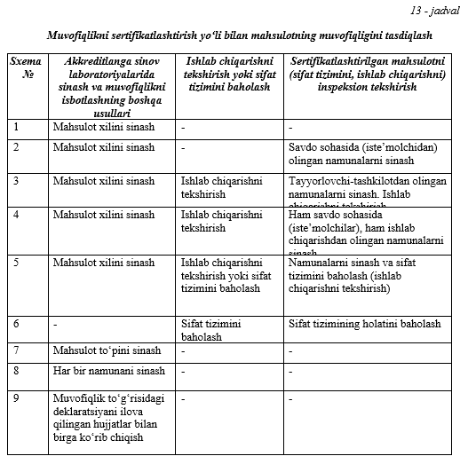
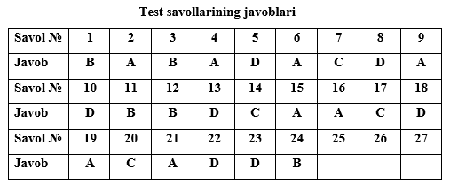

Mashgʻulotning maqsadi: Sertifikatlashtirish sxemalari, ularning oʻziga xos xususiyatlari,
qoʻllanilishi bilan tanishish.
Sertifikatlashtirish sxemasi - bu muvofiqlikni baholashda uchinchi tomon tarafidan amalga oshiriladigan
faoliyatlar tarkibi va ketma-ketligidir.
Murojat etuvchining taklifi, mahsulot hajmi va kelib tushish vaqti, sinov uslubi, ishlab
chiqarishning
o‘ziga xos xususiyatlari va iste’molchilarga xavf-xatar tug‘dirishi mumkin bo‘lganligidan, har bir aniq
vaziyatdan kelib chiqib sertifikatlashtirish sxemasini sertifikatlashtirish idorasi tanlaydi.
O‘zbekiston Respublikasining sertifikatlashtirish milliy tizimi (O‘z SMT) tomonidan tavsiya etilgan
serifikatlashtirish sxemalari haqida quyida ma’lumotlarni keltirib o‘tamiz.
1-sxema. Na’munali mahsulotlarni (umumlashgan namunalarni) sertifikatlashtirishda
qo‘llaniladi va
akkreditlangan sinov laboratoriyasida majburiy ko‘rsatgichlar, birinchi o‘rinda xavfsizlik
ko‘rsatgichlari asosida sinov o‘tqazishni o‘z ichiga oladi. Hamda ushbu sxema mahsulotda aniq
belgilangan normativ hujjat bo‘lmaganida qo‘llaniladi.
Bu xildagi sertifikatlashtirishda sinovga taqdim etilgan namunani belgilangan talablarga muvofiqligi
tasdiqlanadi, xolos. Bu yo‘l o‘zining soddaligi va uncha ko‘p xarajat talab qilmasligi tufayli milliy va
xalqaro savdo munosabatlarida muayyan darajada tarqalgan.
2-sxema. Na’munali mahsulotlarni (umumlashgan namunalarni) sertifikatlashtirishda
qo‘llaniladi va
majburiy ko‘rsatgichlarni tekshirish uchun mahsulotni akkreditlangan sinov laboratoriyasida, birinchi
o‘rinda xavfsizlik ko‘rsatgichlari asosida sinov o‘tqazishni o‘z ichiga oladi. Mazkur sxema savdo
sohasida (iste’molchidan) olingan namunalarni sinovlardan o‘tkazish yo‘li bilan mahulotni inspeksion
tekshiruvdan o‘tkazishni nazarda tutadi.
Bu usul taqdim etilgan namunalar sifatini baholash bilan seriyali ishlab chiqaliyotgan
mahsulotlarning
sifatini ham baholash imkonini beradi. Uning afzalligi soddaligidadir. Kamchiligi esa nazorat sinovlar
natijasiga qarab, agar mahsulot standart talablariga nomuvofiqligi aniqlanilsa, baribir uni savdo
shaxobchalaridan chiqarib tashlash mumkin bo‘lmaydi yoki uni chiqarib tashlash uchun bir muncha
qiyinchiliklar tug‘iladi.
3-sxema. Ushbu sxema ishlab chiqariladigan mahsulotni sertifikat-lashtirishda
qo‘llaniladi va majburiy
ko‘rsatkichlarni tekshirish uchun mahsulotni akkreditlangan sinov laboratoriyasida sinashni va ishlab
chiqa-rishni tekshirishni nazarda tutadi. Mazkur sxemada tayyorlovchi-tashkilotdan olingan mahsulotni
sinovlardan o‘tkazib va muvofiqlik belgisining qo‘llanilishini tekshirish uchun korxonada inspektsion
tekshiruvni o‘tkazish mo‘ljallanadi.
Bu sxemaning ikkinchi sxemadan farqlanuvchi tomoni shuki, mahsulot savdo shaxobchalariga tushmasdan
turib sinov nazorati o‘tkaziladi va standartga nomuvofiqligi aniqlansa, mahsulotning iste’molchiga
jo‘natilishi to‘xtatiladi.
4-sxema. Bu sxema ishlab chiqariladigan mahsulotni sertifikatlashti-rishda
qo‘llaniladi va majburiy
ko‘rsatkichlarni tekshirish uchun mahsulotni akkreditlangan sinov laboratoriyasida sinashni va ishlab
chiqarishni tekshirishni nazarda tutadi. Mazkur sxemada, ham savdo sohasida (iste’molchidan), ham ishlab
chiqarishdan olingan namunalarni sinovlardan o‘tkazish yo‘li bilan mahsulotni, shuningdek muvofiqlik
belgisining qo‘llanilishini inspeksion teshiruvdan o‘tkazish mo‘ljallanadi.
5-sxema. Ushbu sxema ishlab chiqariladigan mahsulotni sertifikat-lashtirishda
qo‘llaniladi va majburiy
ko‘rsatkichlarni tekshirish uchun mahsulotni akkreditlangan sinov laboratoriyasida sinashni va ishlab
chiqarishni tekshirishni yoki sifat tizimini baholashni nazarda tutadi. Mazkur sxemada mahsulotni
sinovlardan o‘tkazish va ishlab chiqarishni tekshirish (yoki sifat tizimini baholash) yo‘li bilan
inspeksion tekshiruvni o‘tkazish mo‘ljallanadi.
Bu sertifikatlashtirish usuli faqat mahsulotning sifatini nazorat qilibgina qolmay, balki korxonada
chiqariladigan mahsulotning sifatini kerakli darajada bo‘lishini ham nazorat qiladi. Tabiiyki,
korxonadagi mahsulot sifatini ta’minlashda, tizimni baholanishida uning mezonini aniqlash muhim
ahamiyatga ega. Ushbu usul sanoati rivojlangan mamlakatlarda hamda xalqaro sertifikatlashtirish
tizimlarida eng ko‘p tarqalgan sxemadir. Birinchi, turtinchi sxemalarga qaraganda bu sxema eng murakkab
va nisbatan qimmatroq turadigan sxema bo‘lib, uning afzalligi iste’molchi mahsulot sifat darajasining
yuqori ekanligiga ishonch hosil qiladi, bu esa asosiy mezon hisoblanadi[3].
6-sxema. Sifat tizimlarini sertifikatlashtirishda qo‘llaniladi, uni baholashni va
keyinchalik
inspeksion nazorat o‘tkazishni o‘z ichiga oladi.
Bu usul ayrim vaqtda korxona – tayyorlovchini attestatlash deb ham yuritiladi. Bu xil
sertifikatlashtirishda faqat korxonaning belgilangan sifat darajadagi mahsulotni chiqarish qobiliyati
baholanadi.
7-sxema. Partiya mahsulotlarni, ya’ni mahsulot to‘dasini sertifikat-lashtirishda
qo‘llaniladi va
akkreditlangan sinov laboratoriyasida sinaladi. Ushbu sxema bo‘yicha sertifikatlashtirish mahsulotning
har bir tayyorlangan to‘dasidan sinovlarga tanlab olishga asoslangan. Tanlab olish sinovlarining
natijalariga qarab to‘dani ortish uchun qaror qabul qilinishi aniqlanadi. Bu xildagi
sertifikatlashtirish uchun tanlanmaning hajmi aniqlanishi lozim, bu esa tayyorlangan to‘daning
katta-kichikligiga maqbul bo‘ladigan sifat darajasiga bog‘liq. Qabul qilingan qoidaga asosan tanlanmani
to‘plash vakolatlangan sinov tashkilotlari tomonidan amalga oshiriladi. Bu xil sertifikatlashtirishning
qo‘llanilishi statistik usulni qo‘llash bilan bog‘liqdir.
8-sxema. Har bir dona mahsulotni sertifikatlashtirishda qo‘llaniladi.
Bu sertifikatlashtirish usulida yuqorida ko‘rib o‘tilgan 1 – 7 – sxemalarga qaraganda
ta’minlovchining
mas‘uliyati ancha yuqori. Tabiiyki muvaffaqiyatli sinovlardan o‘tgan buyumlargina sertifikat yoki
muvofiqlik belgisini oladi. 8 – sxema mahsulotga nisbatan yuqori va qat‘iyroq talablar qo‘yilganda
ishlatilishga asoslangan yoki mahsulotning ishlatilish natijasida standart talablariga mos kelmasligi
iste’molchiga katta iqtisodiy zarar yetkazganida qo‘llaniladi. Bu xil sertifikatlashtirish qimmatbaho
metallardan va qotishmalardan tayyorlanadigan buyumlarda ko‘proq qo‘llaniladi. Bundan asosiy maqsad
qimmatbaho metallarning belgilangan miqdorini, tarkibini va buyumning tozaligini tekshirishdir [21].
9-sxema. Bu sxema mahsulotni sertifikatlashtirishda qo‘llaniladi va mahsulotning
xavfsizlik talablariga
muvofiqligini deklaratsiya qilishni nazarda tutadi. Mazkur sxemada, ishlab chiqaruvchining hohishiga
ko‘ra, muvofiqlik belgisi qo‘llanilishi mumkin.
3, 4, 5, 7, 8, 9-sxemalar ostida muvofiqligi tasdiqlangan mahsulotlar, belgilangan tartibda
muvofiqlik
belgisi bilan belgilanishi mumkin.
Sertifikatlashtirish sxemalari bo‘yicha mahsulotning muvofiqligini tasdiqlash tartibini quyidagi
jadval
tarzida ham ifodalash mumkin (13-jadval).
Hozirgi vaqtda har bir sertifikatlashtirish sxemasining afzalligi va kamchiliklari tahlil etilgan.
Bularning ichida eng mukammal va murakkabi beshinchi sxemadir. Bu sxema to‘liq bo‘lganligi uchun uni
asos qilib olib, hozirgi zamon xalqaro sertifikatlashtirish tizimi yaratilmoqda.

1. Sertifikatlashtirishning 1-sxemasida mahsulotni inspeksion tekshiruvdan o‘tkazish nazarda tutilganmi?
A) ha
B) yo‘q
C) iste’molchining talabiga ko‘ra
D) ishlab chiqaruvchining roziligiga ko‘ra
2. Savdo sohasida (iste’molchidan) olingan namunalarni sinovlardan o‘tkazish yo‘li bilan mahulotni
inspeksion tekshiruvdan o‘tkazishni nazarda tutadigan sxema qaysi?
A) 2-sxema
B) 3-sxema
C) 4-sxema
D) 5-sxema
3. Tayyorlovchi-tashkilotdan olingan mahsulotni sinovlardan o‘tkazib va muvofiqlik belgisining
qo‘llanilishini tekshirish uchun korxonada inspektsion tekshiruvni o‘tkazish mo‘ljallanadigan
sertifikatlashtirish sxemasi qaysi?
A) 2-sxema
B) 3-sxema
C) 4-sxema
D) 5-sxema
4. Sertifikatlashtirishning 4-sxemasida mahsulotni inpeksion tekshiruvdan o‘tkazish qanday
ko‘rinishda
amalga oshiriladi?
A) Ham savdo sohasida (iste’molchidan), ham ishlab chiqarishdan olingan namunalarni sinovlardan
o‘tkazish yo‘li bilan mahsulotni, shuningdek muvofiqlik belgisining qo‘llanilishini inspeksion
teshiruvdan o‘tkazish mo‘ljallanadi.
B) Tayyorlovchi-tashkilotdan olingan mahsulotni sinovlardan o‘tkazib va muvofiqlik belgisining
qo‘llanilishini tekshirish uchun korxonada inspektsion tekshiruvni o‘tkazish mo‘ljallanadi.
C) Savdo sohasida (iste’molchidan) olingan namunalarni sinovlardan o‘tkazish yo‘li bilan mahulotni
inspeksion tekshiruvdan o‘tkazishni nazarda tutadi.
D) Mazkur sxemada mahsulotni sinovlardan o‘tkazish va ishlab chiqarishni tekshirish (yoki sifat
tizimini
baholash) yo‘li bilan inspeksion tekshiruvni o‘tkazish mo‘ljallanadi.
5. Sertifikatlashtirishning 5-sxemasida mahsulotni inpeksion tekshiruvdan o‘tkazish qanday
ko‘rinishda
amalga oshiriladi?
A) Ham savdo sohasida (iste’molchidan), ham ishlab chiqarishdan olingan namunalarni sinovlardan
o‘tkazish yo‘li bilan mahsulotni, shuningdek muvofiqlik belgisining qo‘llanilishini inspeksion
teshiruvdan o‘tkazish mo‘ljallanadi.
B) Tayyorlovchi-tashkilotdan olingan mahsulotni sinovlardan o‘tkazib va muvofiqlik belgisining
qo‘llanilishini tekshirish uchun korxonada inspektsion tekshiruvni o‘tkazish mo‘ljallanadi.
C) Savdo sohasida (iste’molchidan) olingan namunalarni sinovlardan o‘tkazish yo‘li bilan mahulotni
inspeksion tekshiruvdan o‘tkazishni nazarda tutadi.
D) Mazkur sxemada mahsulotni sinovlardan o‘tkazish va ishlab chiqarishni tekshirish (yoki sifat
tizimini
baholash) yo‘li bilan inspeksion tekshiruvni o‘tkazish mo‘ljallanadi.
6. Sertifikatlashtirishning qaysi sxemasi ayrim hollarda “korxona – tayyorlovchini attestatlash” deb
ham
yuritiladi?
A) 6-sxema
B) 5-sxema
C) 7-sxema
D) 8-sxema
7. Sertifikatlashtirishning qaysi sxemasi partiya mahsulotlarni, ya’ni mahsulot to‘dasini
sertifikatlashtirishda qo‘llaniladi va akkreditlangan sinov laboratoriyasida sinaladi?
A) 6-sxema
B) 5-sxema
C) 7-sxema
D) 8-sxema
8. Sertifikatlashtirishning qaysi sxemasi har bir dona mahsulotni sertifikatlashtirishda
qo‘llaniladi?
A) 6-sxema
B) 5-sxema
C) 7-sxema
D) 8-sxema
9. “Bu sxema mahsulotni sertifikatlashtirishda qo‘llaniladi va mahsulotning xavfsizlik talablariga
muvofiqligini deklaratsiya qilishni nazarda tutadi. Mazkur sxemada, ishlab chiqaruvchining hohishiga
ko‘ra, muvofiqlik belgisi qo‘llanilishi mumkin”. Ushbu ma’lumotlar sertifikatlashtirishning qaysi
sxemasiga tegishli?
A) 9-sxema
B) 5-sxema
C) 7-sxema
D) 8-sxema
10. Qimmatbaho metallarning belgilangan miqdorini, tarkibini va buyumning tozaligini tekshirishga
oid
faoliyatlar qaysi sxema bo‘yicha sertifikatlashtirishda amalga oshiriladi?
A) 9-sxema
B) 5-sxema
C) 7-sxema
D) 8-sxema
11. Qaysi sxema sanoati rivojlangan mamlakatlarda hamda xalqaro sertifikatlashtirish tizimlarida eng
ko‘p tarqalgan sxema hisoblanadi?
A) 9-sxema
B) 5-sxema
C) 7-sxema
D) 8-sxema
12. Sertifikatlashtirishning qaysi sxemasida shlab chiqarishni tekshirish (yoki sifat tizimini
baholash)
yo‘li bilan inspeksion tekshiruvni o‘tkazish mo‘ljallanadi?
A) 9-sxema
B) 5-sxema
C) 7-sxema
D) 8-sxema
13. Lisеnziya nimа?
A) Lisеnziya - bu o‘lchаsh vоsitаlаrini ishlаb chiqish, yarаtish, (sоtish, ijаrаgа bеrish) uchun
dаvlаt
mеtrоlо-giya xizmаti tоmоnidаn yuridik vа jismоniy shаxslаrgа bеri-lаdigаn, mаzkur fаоliyat turlаri
bilаn shug‘ullаnish huquqini guvоhlаntiruvchi hujjаtdir
B) Lisеnziya - bu bu dаvlаt mеtrоlоgiya xizmаti tоmоnidаn bеrilаdigаn guvоhnоmа
C) Lisеnziya - bu mаhsulоtni ishlаb chiqish, tа`mirlаsh, sоtish uchun mаzkur fаоliyat turlаri bilаn
shug‘illаnuvchi shаxslаrgа bеrilаdigаn hujjаtdir
D) Lisеnziya - bu o‘lchаsh vоsitаlаrini ishlаb chiqish, tа`mirlаsh, sоtish xuquqini guvоhlаntiruvchi
hujjаtdir
14. Sеrtifikаtlаshtirishdа birinchi tоmоn kim?
A) Istе`mоlchi, tаlаbgоr
B) Sеrtifikаtlаshtirish idоrаsi
C) Ishlаb chiqаruvchi
D) Sоtuvchi
15. Tеgishlichа bеlgilаngаn mаhsulоt, jаrаyon yoki xizmаtlаrning mа`lum stаndаrtgа yoki bоshqа
mе’yoriy
hujjаtgа mоs kеlishigа ishоntirаdigаn hujjаt nimа dеyilаdi?
A) Muvоfiqlik sеrtifikаti
B) litsеnziya
C) guvohnoma
D) bаyonnоmа
16. Sеrtifikаtlаshtirishda ikkinchi tоmоn kim hisoblanadi?
A) istе`mоlchi, tаlаbgоr
B) sеrtifikаtlаshtirish idоrаsi va laboratoriyalar
C) ishlаb chiqаruvchi va sotuvchi
D) dаvlаt idоrаlаri va ularning vakillari
17. Qаndаy tаshkilоt Milliy sеrtifikаtlаshtirish idоrаsi bo‘lаdi?
A) O‘zR milliy etalonlar markazi
B) O‘zbekiston Milliy metrologiya instituti
C) O‘zstаndаrt аgеntligi
D) Tegishli soha vazirliklari
18. O‘zbеkistоn Rеspublikаsidа аmаldа nеchtа sеrtifikаtlаshtirish sxеmаsi mаvjud?
A) 7 tа
B) 8 tа
C) 5 tа
D) 9 tа
19. “Muvоfiqlik bеlgisi” nimа?
A) Mаhsulоt yoki xizmаt stаndаrtgа yoki bоshqа mе`yoriy hujjаt tаlаblаrigа mоsligini ko‘rsаtuvchi,
o‘rnаtilgаn tаrtibdа tаsdiqlаngаn, mаhsulоtni mаrkаlаsh yoki xizmаt xujjаtlаridа ko‘rsаtilgаn bеlgi.
B) Mаhsulоtni muаyyan stаndаrtgа mоsligini ko‘rsаtuvchi bеlgi
C) Mаhsulоt yoki xizmаtni mе`yoriy hujjаtlаr tаlаbigа mоsligini ko‘rsаtuvchi raqamli shartli belgi
D) Sеrtifikаtlаshtirish tizimi qоidаlаrigа muvоfiq o‘rnаtilаdigаn bеlgi
20. “Muvоfiqlik bаyonоti” nimа?
A) Ishlаb chiqаruvchi tоmоnidаn mаhsulоtning kеrаkli dаrаjаdа sifаtliligi hаqidа bаyonоti
B) Ishlаb chiqаruvchining mаxsulоtni sifаt ko‘rsаtkichlаri hаqidаgi bаyonоti.
C) Yetkаzib bеruvchining mаhsulоt, jаrаyon vа xizmаtlаrning аniq bir stаndаrtgа yoki bоshqа xujjаtgа
to‘lа-to‘kis muvоfiqlik hаqidа butun mа`suliyatini o‘z ustigа оlgаnligini bаyon etishigа аytilаdi.
D) Mаhsulоtni bеlgilаngаn tаlаblаrgа to‘lа-to‘kis muvоfiqligini tаsdiqlоvchi bаyonоt.
21. Qаysi turdаgi mаhsulоtlаr mаjburiy sеrtifikаtlаshtirilаdi?
A) Tаshqi muhitgа, insоn sаlоmаtligigа tа`sir ko‘rsаtuvchi mаhsulоtlаr mаjburiy
sеrtifikаtlаshtirishgа
mаnsub bo‘lаdi
B) Mаhsulоtni stаndаrtdаgi tаlаblаrgа mоs kеlishi tаsdiqlаnmagаn hоldа
C) Insоn sаlоmаtligigа zаrаr еtkаzmаydigаn mаxsulоtlаr
D) Tеxnikаviy shаrtdаgi bаrchа tаlаblаrgа muvоfiqligi tаsdiqlаngаn mаhsulоtlаr
22. Mahsulotga muvofiqlik belgisi nima haqida guvohlik beradi?
A) Mahsulotni eksport qilish mumkinligi haqida
B) Mahsulotning xavfsizligi va sotish mumkinligi haqida
C) Mahsulot sinov laboratoriyasida sinovdan o‘tkazilganligi haqida
D) Mahsulot sertifikatlashtirishdan o‘tkazilgan va mahsulot xavfsizligi haqida
23. Mahsulot namunalarini sinash uchun qancha miqdorda tanlanadi?
A) Tekshirilayotgan mahsulot hajmiga nisbatan 10% dan kam bo‘lmagan miqdorda
B) Tekshirilayotgan mahsulot hajmiga bog‘liq ixtiyoriy miqdorda
C) Tekshirilayotgan mahsulot hajmiga nisbatan 5% miqdorda
D) Me’yoriy hujjatlarda ko‘zda tutilgan miqdorda
24. Sеrtifikаtlаshtirish оbyеkti nimаdаn ibоrаt?
A) Oziq-ovqat va kiyim-kechaklar
B) Mаhsulоt, xizmаtlаr, sifаt tizimi
C) Xizmаtlar, jarayonlar
D) Sifаt tizimi, mahsulotlar

Mavzuni takrorlash uchun savollar
1. Sertifikatlashtirish sxemasi deganda nimani tushunasiz?
2. Sertifikatlashtirishning 1- va 2-sxemalarini tushuntirib bering.
3. Sertifikatlashtirishning 3- va 4-sxemalarini tushuntirib bering.
4. Sertifikatlashtirishning 5-sxemasini tushuntirib bering. Uning afzallik tomonlarini ayting.
5. Sertifikatlashtirishning 6- va 7-sxemalarini tushuntirib bering.
6. Sertifikatlashtirishning 8-sxemasi va uning qoʻllanilishi haqida tushuncha bering.
7. Sertifikatlashtirishning qaysi sxemalarida muvofiqlik sertifikati berilishi nazarda tutilgan?